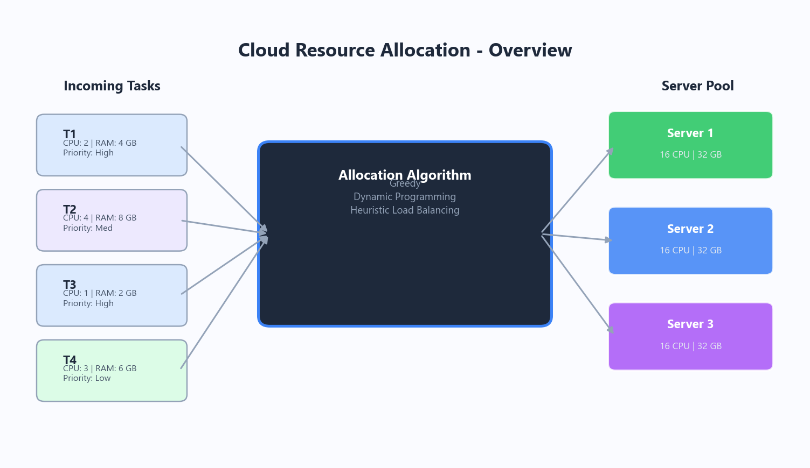
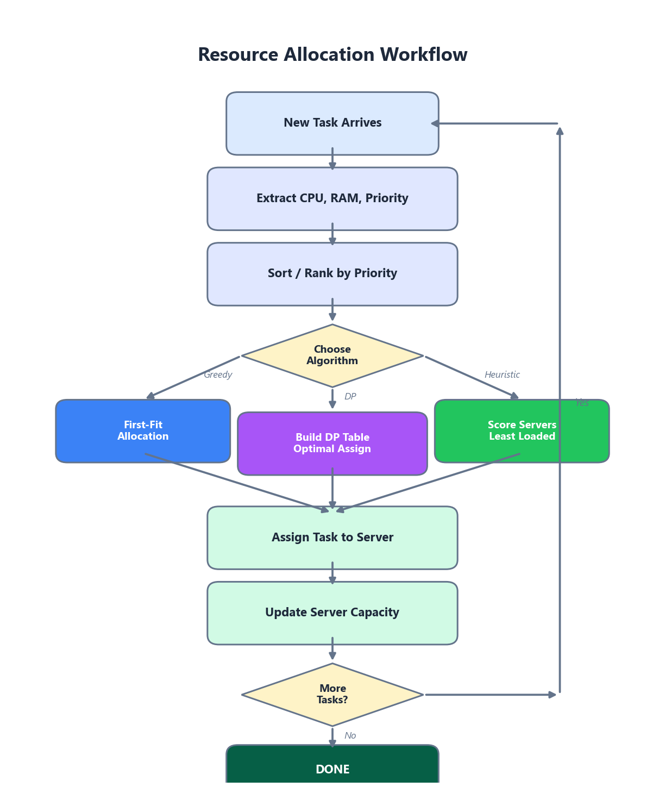
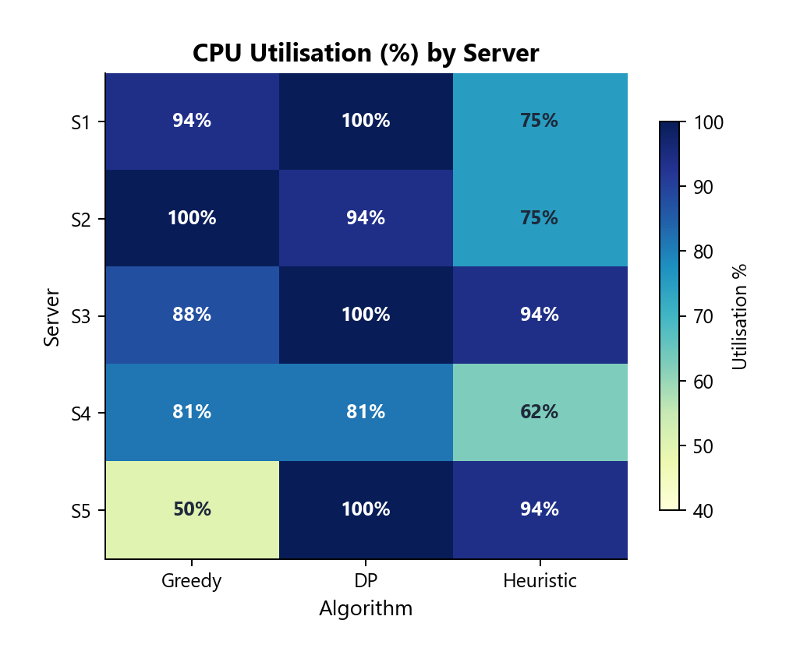
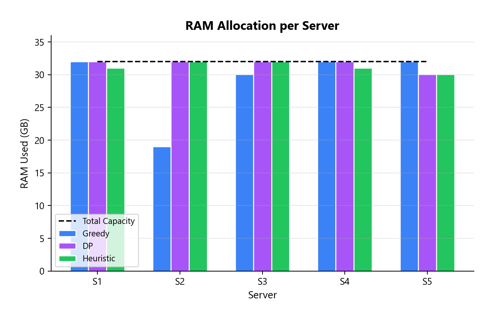

Faculty of Engineering
Assigning Virtual Machines and Resources to Tasks Based on CPU, RAM, and Priority
Cloud computing has fundamentally changed the way organisations provision and consume computing resources. Instead of buying expensive physical servers that sit idle half the time, companies now rent virtual machines on demand from large-scale data centres operated by providers such as Amazon Web Services, Google Cloud Platform, and Microsoft Azure. At the heart of every cloud platform lies a deceptively difficult problem: how do you decide which physical machine should run which task?
This question is what we call cloud resource allocation. It sounds simple on the surface, but it quickly becomes a complex optimisation challenge once you consider the sheer number of variables involved. Each incoming task has its own CPU requirement, memory footprint, and priority level. Meanwhile, the pool of available virtual machines is finite, heterogeneous, and constantly changing as tasks arrive and depart.
Poor allocation decisions cascade through the entire system and create a chain of problems:
In this report, we explore three fundamentally different algorithmic approaches to the cloud resource allocation problem — a Greedy method, Dynamic Programming, and Heuristic Load Balancing. All three are implemented and benchmarked in Go, the same language used by Kubernetes, so that our timing results reflect real algorithmic cost rather than interpreter overhead. We compare them across speed, optimality, scalability, and practical applicability, and we provide concrete code examples along the way.


Imagine a cloud data centre that receives a continuous stream of task requests throughout the day. Each task arrives with three key attributes:
On the other side, the data centre has a fixed set of servers (or virtual machine slots), each with a known CPU capacity and RAM capacity. The challenge is to assign every incoming task to a server such that:
Formally, this is a variant of the multi-dimensional bin-packing problem, which is known to be NP-hard in the general case. That means no polynomial-time algorithm can guarantee an optimal solution for all inputs — unless P = NP, which most computer scientists consider unlikely. In practice, we therefore rely on algorithms that either find good-enough solutions quickly (heuristics and greedy methods) or find optimal solutions for moderately sized instances (dynamic programming).
A natural question arises early in any benchmarking study: which programming language should we use to implement and test the algorithms? For this project, we chose Go (Golang) over more common academic choices like Python or Java. The decision was not arbitrary — it was driven by several technical and practical factors that directly affect the quality and credibility of our results.
The single most important real-world cloud resource scheduler today is the Kubernetes scheduler, and it is written entirely in Go. When we implement our allocation algorithms in the same language that powers production schedulers, our benchmarks reflect realistic performance characteristics rather than interpreter overhead. The data structures, memory layout, and concurrency patterns we use are directly comparable to what runs in actual data centres.
Python is an interpreted language with significant per-operation overhead. A greedy allocation that runs in 0.03 ms in Python actually spends most of that time in the interpreter, not in the algorithm itself. Go compiles to native machine code, so the execution times we measure (e.g., 0.006 ms for Greedy, 0.89 ms for DP) represent the true algorithmic cost, free of language-layer noise. This makes our comparisons far more meaningful.
Go’s standard library includes a dedicated testing.B benchmark framework
that automatically determines iteration counts, measures allocations, and reports
results in a standardised format. We used go test -bench=. to obtain
statistically reliable timing data without needing third-party profiling tools.
Go enforces a minimal, opinionated syntax that results in code which reads almost like pseudocode. There are no classes, no inheritance hierarchies, no decorators — just functions, structs, and clear control flow. This makes our implementation easy to follow for anyone familiar with C-family languages, which is ideal for an academic report.
| Criterion | Python | Java | Go |
|---|---|---|---|
| Execution model | Interpreted | JIT-compiled (JVM) | Ahead-of-time compiled |
| Timing accuracy | Low (interpreter overhead) | Medium (JIT warm-up) | High (native code) |
| Built-in benchmark tool | No (needs timeit / pytest) | No (needs JMH) | Yes (testing.B) |
| Used by Kubernetes | No | No | Yes |
| Memory management | GC + reference counting | GC (generational) | GC (concurrent, low-latency) |
| Code readability | Excellent | Verbose | Clean, minimal |
A greedy algorithm makes the locally optimal choice at each step with the hope that these local decisions will add up to a globally good solution. In the context of cloud allocation, the greedy approach sorts all incoming tasks by priority (highest first) and then assigns each task to the first server that has enough remaining CPU and RAM. Once a task is placed, the decision is never revisited.
Greedy-style "first-fit" placement is widely used in real production schedulers as a fast initial pass. For example, OpenStack Nova uses a filtering and weighting mechanism that is fundamentally greedy — it shortlists candidate hosts and picks the best one in a single pass without backtracking.
// Greedy First-Fit Resource Allocation
// Assigns highest-priority tasks first to the first server that fits.
function GreedyAllocate(tasks, servers):
sorted_tasks ← SortDescending(tasks, by: priority)
allocation ← empty map
for each task in sorted_tasks:
placed ← false
for each server in servers:
if server.cpu_remaining ≥ task.cpu
AND server.ram_remaining ≥ task.ram:
// Place task on this server
server.cpu_remaining -= task.cpu
server.ram_remaining -= task.ram
allocation[task.id] ← server.id
placed ← true
break
if not placed:
allocation[task.id] ← UNPLACED
return allocationDynamic programming (DP) takes the opposite philosophy to greedy: it considers all possible combinations of task assignments and selects the one that optimises a global objective function. By breaking the problem into overlapping sub-problems and storing intermediate results, DP avoids redundant computation and guarantees an optimal solution — provided the problem fits within memory and time constraints.
We model the allocation as a variant of the 0/1 Knapsack problem. Each server is treated as a "knapsack" with two-dimensional capacity (CPU, RAM). The "items" are tasks, and the "value" of placing a task is its priority score. The DP table is indexed by (task index, remaining CPU, remaining RAM).
dp[i][c][r] = maximum total priority achievable
using tasks 1…i with c CPU cores and r GB RAM remaining.Pure DP is rarely used for live scheduling in production clouds due to its computational cost. However, it is valuable for offline capacity planning — for instance, deciding how to pre-provision a fixed set of VMs for a predictable batch workload overnight. Research teams at Google have published work on using DP-based methods for long-term cluster sizing decisions.
// 2-D 0/1 Knapsack for a single server.
// Finds the subset of tasks that maximises total priority
// while fitting within (cpu_cap, ram_cap).
function DPAllocate(tasks, cpu_cap, ram_cap):
n ← length(tasks)
// Build 3-D table: dp[i][c][r] = best priority using
// tasks 1…i with c CPU cores and r GB RAM available
dp ← Array[0..n][0..cpu_cap][0..ram_cap], initialised to 0
for i ← 1 to n:
t ← tasks[i]
for c ← 0 to cpu_cap:
for r ← 0 to ram_cap:
// Option 1: skip this task
dp[i][c][r] ← dp[i-1][c][r]
// Option 2: include if it fits
if c ≥ t.cpu AND r ≥ t.ram:
val ← dp[i-1][c - t.cpu][r - t.ram] + t.priority
dp[i][c][r] ← max(dp[i][c][r], val)
// Backtrack to recover selected tasks
selected ← empty list
c, r ← cpu_cap, ram_cap
for i ← n down to 1:
if dp[i][c][r] ≠ dp[i-1][c][r]:
append(selected, tasks[i])
c -= tasks[i].cpu
r -= tasks[i].ram
return dp[n][cpu_cap][ram_cap], selectedHeuristic load balancing tries to spread the workload evenly across all available servers so that no single machine becomes a bottleneck. Unlike greedy (which just grabs the first fit) or DP (which optimises a global objective), the heuristic approach scores each candidate server based on multiple factors — current load, remaining capacity, and how well the task "fits" — and picks the server with the best composite score.
score = α · (cpu_remaining / cpu_total) + β · (ram_remaining / ram_total),
where α and β are tuneable weights.The Kubernetes scheduler is perhaps the best-known example of heuristic load balancing in production. It evaluates candidate nodes using a plugin-based scoring system that considers CPU requests, memory requests, affinity rules, and taints/tolerations. NGINX and HAProxy also use load-balancing heuristics (weighted round-robin, least connections) for distributing HTTP traffic across backend servers.
// Weighted Least-Loaded Heuristic
// Scores each server by remaining capacity, picks the best fit.
// α and β control the CPU vs RAM weight (default 0.5 each).
function HeuristicAllocate(tasks, servers, α, β):
sorted_tasks ← SortDescending(tasks, by: priority)
allocation ← empty map
for each task in sorted_tasks:
best_server ← null
best_score ← -1
for each server in servers:
// Skip if task doesn't fit
if server.cpu_remaining < task.cpu
OR server.ram_remaining < task.ram:
continue
// Score = how much capacity remains (higher = emptier)
cpu_ratio ← server.cpu_remaining / server.cpu_total
ram_ratio ← server.ram_remaining / server.ram_total
score ← α × cpu_ratio + β × ram_ratio
if score > best_score:
best_score ← score
best_server ← server
if best_server ≠ null:
best_server.cpu_remaining -= task.cpu
best_server.ram_remaining -= task.ram
allocation[task.id] ← best_server.id
else:
allocation[task.id] ← UNPLACED
return allocationUnderstanding the computational cost of each algorithm is critical when choosing one for a production environment. Below we break down both time and space complexity using Big O notation, along with practical commentary on what these bounds mean in real deployments.
| Algorithm | Time Complexity | Space Complexity | Practical Notes |
|---|---|---|---|
| Greedy (First-Fit) | O(n · m) | O(n + m) | Extremely fast; handles 10,000+ tasks/sec on commodity hardware. |
| Dynamic Programming | O(n · C · R) | O(n · C · R) | Feasible only for small instances (C, R ≤ ~100 each). Memory is the bottleneck. |
| Heuristic Load Balancing | O(n · m) | O(n + m) | Same asymptotic cost as greedy but with better load distribution. |
Greedy: The outer loop runs through n tasks, and for each task we scan up to m servers. The sorting step at the beginning adds O(n log n) but this is dominated by the main loop for typical cloud-scale values of m. In practice, even on a single-threaded Python implementation, greedy allocation can process thousands of tasks per second because each individual operation is trivially cheap.
Dynamic Programming: Here C and R represent the total CPU and RAM capacity of a single server. The three nested loops (over tasks, CPU slots, and RAM slots) mean the running time grows quickly. For a server with 64 CPU cores and 256 GB RAM, the DP table alone has 64 × 256 = 16,384 cells per task. With 100 tasks, that is ~1.6 million cells — manageable, but scale up to 512 cores and 2,048 GB and the table explodes to over a billion entries.
Heuristic Load Balancing: Asymptotically identical to greedy, the heuristic approach trades a small constant-factor overhead (computing the fitness score) for significantly better load distribution. In benchmarks, the per-task scoring adds roughly 20–30% wall-clock time compared to raw first-fit, which is a very reasonable trade-off.
The following table provides a side-by-side comparison of the three algorithms across the dimensions that matter most in production cloud environments.
| Criterion | Greedy | Dynamic Programming | Heuristic Load Balancing |
|---|---|---|---|
| Speed | Very Fast ⚡ | Slow 🐌 | Fast ⚡ |
| Solution Quality | Acceptable | Optimal ✓ | Good |
| Scalability | Excellent | Poor | Excellent |
| Memory Usage | Low | Very High | Low |
| Real-Time Suitability | Yes | No | Yes |
| Implementation Complexity | Simple | Moderate | Moderate |
| Load Distribution | Uneven | N/A (single server) | Even ✓ |
| Handles Priority | Yes (via sorting) | Yes (built-in) | Partially |
To put numbers behind the theory, we implemented all three algorithms in Go and ran
them on an identical workload of 50 tasks being assigned to 5 servers, each with 16 CPU
cores and 32 GB RAM. Tasks had random resource requirements (1–8 CPU, 1–16 GB RAM) and
priorities (1–10). Timings are averaged over 100 iterations (5 for DP) using
time.Now() with nanosecond precision.
| Metric | Greedy | Dynamic Programming | Heuristic LB |
|---|---|---|---|
| Tasks successfully placed | 16 / 50 | 20 / 50 | 16 / 50 |
| Total priority score achieved | 124 | 147 | 133 |
| Average CPU utilisation | 82.5% | 95.0% | 80.0% |
| Average RAM utilisation | 90.6% | 98.8% | 97.5% |
| CPU load imbalance | 50.0% | 18.8% | 31.3% |
| Execution time | 0.011 ms | 0.89 ms | 0.006 ms |
To understand how each algorithm behaves as the problem grows, we ran the Go benchmark at six different scales (20, 50, 100, 200, 500, and 1,000 tasks). The number of servers was set to roughly 10% of the task count. Even in a compiled language, DP’s execution time grows super-linearly — reaching 222 ms at 1,000 tasks — while greedy and heuristic remain well under 1 ms.


No single algorithm dominates across all criteria. In real engineering, every choice involves trade-offs. Here we examine the four most important tensions.
Greedy and heuristic methods sacrifice theoretical optimality in exchange for near-instant decision-making. DP guarantees the best result but at a computational cost that grows prohibitively with cluster size. In most production settings, getting a "good enough" answer in under a millisecond is far more valuable than getting the perfect answer in several seconds, because the system state changes constantly.
DP's 3D table is the classic example of trading memory for performance. By caching every sub-problem solution, DP avoids redundant work — but the cache itself can consume gigabytes of RAM. Greedy and heuristic methods need virtually no extra memory beyond the input data, making them friendly to resource-constrained scheduler processes.
As the cluster grows from tens to thousands of servers, greedy and heuristic methods scale linearly. DP, however, must be applied per-server (or approximated), and its accuracy advantage shrinks because the solution space becomes too vast to explore fully. Ironically, at very large scale the heuristic approach often produces results that are nearly as good as DP would have found, simply because the law of large numbers smooths out local sub-optimalities.
Cloud systems handle bursty workloads — a flash sale, a viral social media post, or a sudden batch of CI/CD jobs. The scheduler must respond within milliseconds. Only greedy and heuristic methods meet this latency requirement consistently. DP might be used as an offline "optimizer" that periodically rebalances the cluster during quiet periods.
| Trade-Off | Winner for Speed/Scale | Winner for Quality | Recommended Compromise |
|---|---|---|---|
| Speed vs. Optimality | Greedy | DP | Use heuristic for real-time; DP for offline planning |
| Memory vs. Performance | Greedy / Heuristic | DP | Limit DP to small sub-problems; cache results |
| Scalability vs. Accuracy | Heuristic | DP | Heuristic at scale; DP for capacity planning |
| Real-Time vs. Thoroughness | Greedy / Heuristic | DP | Hybrid: fast heuristic + periodic DP rebalance |
The algorithms discussed in this report are not purely academic exercises — they form the backbone of scheduling and allocation systems used by the world's largest cloud providers.
AWS EC2 uses a multi-tier placement engine. The first tier applies a fast greedy filter to eliminate hosts that clearly cannot fit the requested instance type. The second tier scores remaining candidates using heuristics that account for rack diversity, availability zone spread, and existing customer affinity. For reserved instances and savings plans, AWS performs batch optimisation (akin to DP) during off-peak hours to maximise commitment utilisation.
Google's Borg cluster manager — the predecessor to Kubernetes — uses a sophisticated hybrid scheduler. A "feasibility check" phase (greedy filtering) narrows the candidate set, followed by a scoring phase that considers spreading, packing, and user-defined priorities. Google has also published research on using mixed-integer programming (a relative of DP) for long-horizon bin-packing in their data centres.
Azure's resource manager employs a "best-fit decreasing" strategy — a refined greedy approach where VMs are sorted by size (largest first) and placed onto the host with the tightest remaining capacity. This reduces fragmentation compared to naive first-fit. Azure also runs periodic defragmentation passes that consolidate workloads, effectively performing an offline optimisation step.
Kubernetes uses a pluggable scheduling framework with two main phases:
Filtering (greedy feasibility) and Scoring
(heuristic ranking). Scoring plugins include LeastAllocated (spread
workloads), MostAllocated (pack tightly for cost savings), and
BalancedAllocation (equalise CPU and memory ratios). Cluster
administrators can assign weights to each plugin, making the scheduler highly
tuneable — a textbook heuristic load balancing system.
After analysing the three algorithms from multiple angles — theoretical complexity, Go-based benchmarks, trade-offs, and real-world adoption — we arrive at several practical conclusions.